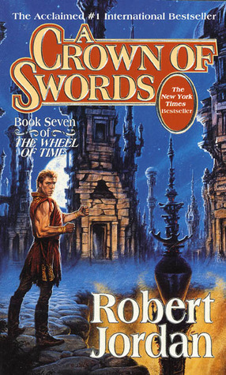

"A Crown of Swords"
- Read on 2015-08-13
- Rating: ️️️️️
- Format: 🎧 (30 hours 24 minutes)
I wasn't in love with this book, but it had some great moments I was looking for. Admittedly, there are, at this point, so many story lines, and subplots, that it's quite a bit more engaging. That being said, some of them I don't really care about.
I love the interaction between Mat and Birgitte, and that the bond can carry the inebriation of the other. I'm _beyond_ thrilled that Nynaeve has broken her block. I was so sick of her always being angry because it was her gateway to channeling. Now she's just angry and impatient because that's in her nature. I'm also glad we get to be around Lan again. I like him. The maneuvering of the "rebel" Aes Sedai is interesting, but will soon feel like it slows down for a while. Lastly, I never really get around to _liking_ Cadsuane. Her role always seems too ambiguous to me - this may just stem from me disagreeing with how she goes about her task. She now takes the crown for the most stubborn character we know (somehow wrestling that away from Nynaeve).
Really, it's a decent installment, but not one I'm in love with. This all being said, the next handful of books are mediocre, but lead to some of my favorite books I've ever read.
- Prior: 1776
- Next: The Path of Daggers